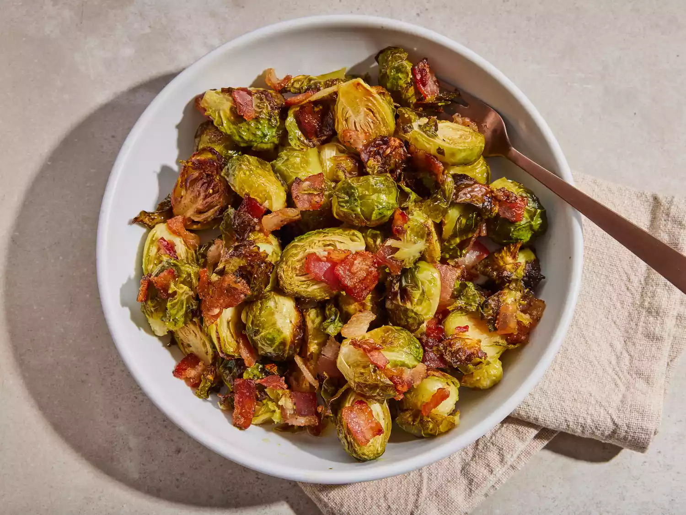

Maple Roasted Brussels Sprouts with Bacon

Description
Crispy Maple Roasted Brussels Sprouts with Bacon is a delicious and savory side dish that combines the natural sweetness of maple syrup with the smoky flavor of bacon. The Brussels sprouts are roasted to perfection, resulting in a caramelized and crispy texture that pairs wonderfully with any main course. This recipe is easy to prepare and perfect for enhancing your meal with rich and complementary flavors.
Ingredients
- 1 pound Brussels sprouts, trimmed and halved
- 3 slices bacon, cut into 1/2-inch pieces
- 1/4 cup olive oil
- 1/4 cup maple syrup
- Salt and ground black pepper to taste
Steps
- Preheat your oven to 400°F (200°C).
- In a large bowl, combine the Brussels sprouts, bacon pieces, olive oil, and maple syrup. Season with salt and black pepper to taste.
- Spread the mixture in a single layer on a baking sheet.
- Roast in the preheated oven until the Brussels sprouts are caramelized and tender, and the bacon is crispy, about 30 to 40 minutes. Stir halfway through the cooking time.
- Remove from the oven and serve warm.